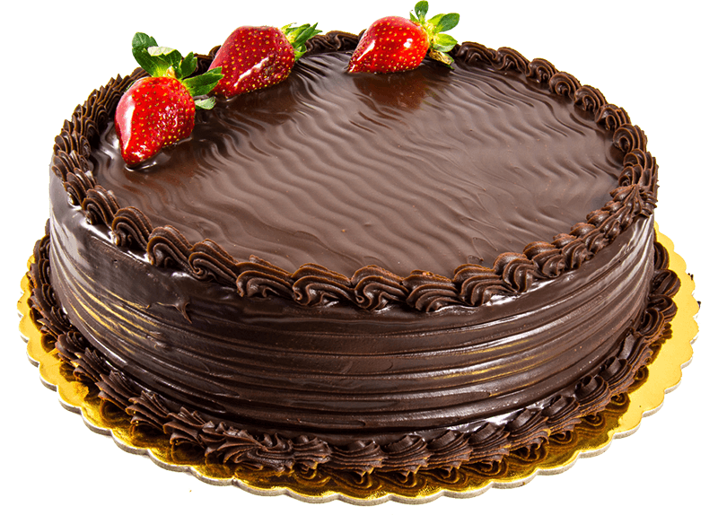

Ingredients
- 1 cup sugar
- 2 cups flour
- 3 eggs
Instructions
- Preheat the oven to 350°F (175°C).
- Mix sugar and eggs in a bowl.
- Add flour and mix until smooth.
- Pour the batter into a greased baking pan.
- Bake for 30 minutes or until a toothpick comes out clean.
Back to Recipe List